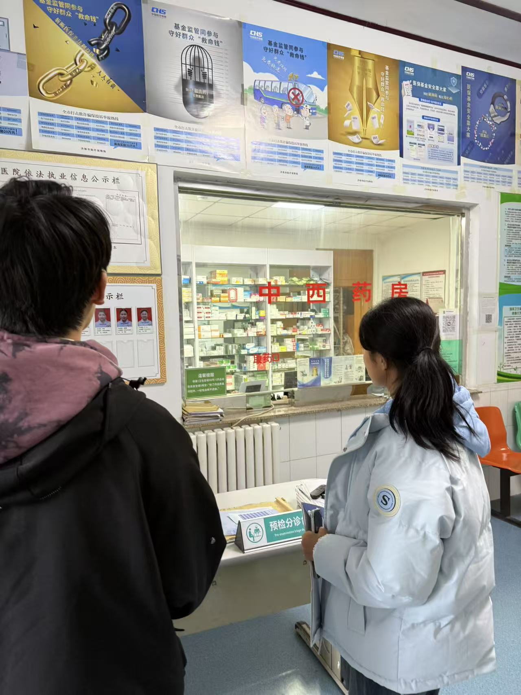
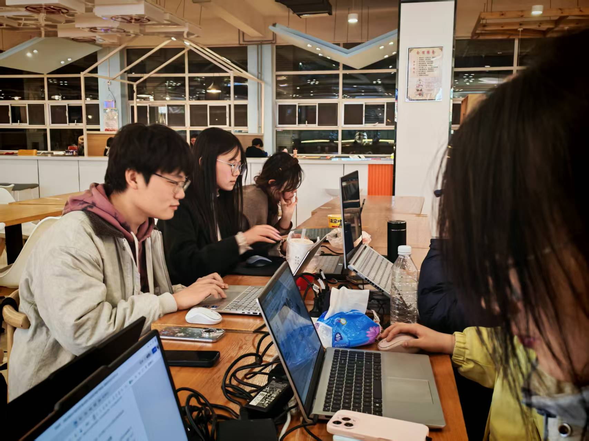

Elite Pioneers
跨学科 极客全链矩阵
以计算机科学为主轴，深度融合临床医学、商业精算与设计交互，覆盖产品研发的每一块全流程版图。
谷元杰
算法统筹 / CEO
计算机科学与技术统筹 MAPFM 算法，ACM会议论文独立一作，主导多智能体端侧落地。
卢子涵
临床对接 / 商务
信息管理与系统对接 3 家三甲医院调研与试点协议签署，深谙临床医护与政策痛点转化。
张芸嘉
前端开发 / 可视化
计算机科学与技术主导 Agent 前后端逻辑联动与大屏可视化，负责现场设备硬件级联测试。
陈炎希
商业运营 / 市场
经济学科拔尖人才统筹医院运维台账管理，深入社区梳理刚性需求，策划商业推广路径。
李玥莹
财务精算 / CFO
金融数学专业构筑项目单院盈利模型与 5 年期现金流预算精准测算，把控融资释放率。
于海桐
后端开发 / 数据库
应用数学专业负责千万级医疗脱敏向量数据库搭建，保障微服务架构高并发与安全。
张涵
技术测试 / QA
计算机科学与技术构建超 20000 次压力测例集，死磕 AI 幻觉边缘情况，护航稳定延迟线。
赵梓含
项目管理
公共管理专业运用敏捷开发体系统筹软硬件进度，把控大创各项申报物料交付节奏。
祝萌璐
学术文献 / 科研
公共管理类负责梳理国际最新大模型 SOTA 论文，为 MAPFM 提供强有力理论溯源。
张宝瑄
UI/UX 设计 / PM
计算机科学与技术操刀护士站管理大屏与护工适老化终端界面，以极简交互降低培训门槛。
刘峥 教授 / 博导
山东财经大学计算机与人工智能学院。研究方向：跨模态信息检索、大数据挖掘。发表 SCI/EI 30余篇，为算法底层创新提供极强背书。
李珊珊 讲师 / 双创导师
指导学生获国家级奖项 3 项、省部级 9 项。全程把控团队大创项目立项、路演打磨与产业落地路径指引。


科技向善，
践行青年社会使命
智医算深度融入“青年红色筑梦之旅”精神。我们认为技术不该只有冰冷的参数，它必须有温度、能扎根，去真正抚平每一个失能家庭的焦灼与痛楚。
普惠基层：让医疗平权
定制适老轻量化界面，将三甲标杆的 AI 护理经验下沉至乡镇及社区养老驿站，让农村老人同样拥抱标准照护。
重塑尊严：就业结构优化
杜绝暴力替代。将 50 岁以上传统护工从重体力劳动中解放，赋能转型为“AI 护理调度师”，预计创造 500+ 高质新增就业。
绿色医疗：践行双碳理念
精准预测削减并发症衍生的药械浪费超 15%，缩短均床周期，间接推动单院碳排年缩减达 10 吨以上。
失能病房的人工智能曙光
告别 1:8 的绝望照护比例，AI 让每一张病床都被 24h 凝视与守护。

试点医院深度调研
济南华圣医院作为第一试点医院，团队真正下沉民生市场，了解当下社会医疗需求。
三甲医院深度部署验证
与一线专家医生进行临床研讨，让技术的底层逻辑彻底适配临床痛点。
扎根基层的“青年红”
走街串巷开展老年智慧医疗知识普及，以大学生的热血丈量社会真需。

团队助力项目稳步前行
线下聚集进行高质量工作，保证模型不断迭代升级。